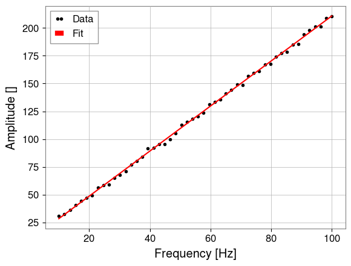
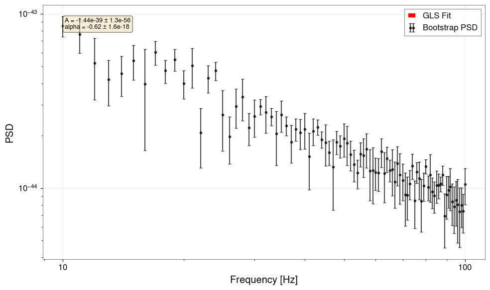

Note
このページは Jupyter Notebook から生成されました。 ノートブックをダウンロード (.ipynb)
フィッティングとパラメータ推定
目的: 通常最小二乗法（OLS）および一般化最小二乗法（GLS）を使用して GW データにモデルをフィットする方法を学びます。
GWexpy は主要な最適化エンジンとして iminuit を使用し、相関を持つスペクトルデータ用の特化したコスト関数を提供します。
1. 単純な OLS フィット
対角誤差（OLS）を使った単純なべき乗則フィットから始めます。
[1]:
import numpy as np
import matplotlib.pyplot as plt
from gwexpy.noise.asd import white_noise
from gwexpy.fitting import fit_series
# 合成データの生成
freqs = np.linspace(10, 100, 50)
model = lambda f, a, b: a * f + b
y_true = model(freqs, 2.0, 10.0)
y_obs = y_true + np.random.normal(0, 2, size=len(freqs))
from gwexpy.frequencyseries import FrequencySeries
psd = FrequencySeries(y_obs, frequencies=freqs)
res = fit_series(psd, model, p0={"a": 1.0, "b": 1.0})
res.plot()
plt.show()
print(f"フィット結果: a={res.params['a']:.2f}, b={res.params['b']:.2f}")

フィット結果: a=2.03, b=8.07
2. 一般化最小二乗法（GLS）
データ点が相関している場合（例：重なり窓を使った PSD 推定）、共分散行列 \(\Sigma\) を使用します。
[2]:
from gwexpy.fitting import GeneralizedLeastSquares
from iminuit import Minuit
# ダミー共分散行列の作成
cov = np.eye(len(freqs)) * 4.0
cov_inv = np.linalg.inv(cov)
# 1. コスト関数の定義
cost = GeneralizedLeastSquares(freqs, y_obs, cov_inv, model, cov=cov)
# 2. Minuit の初期化と実行
m = Minuit(cost, a=1.0, b=1.0)
m.migrad()
print(m.values)
<ValueView a=2.026978885663505 b=8.074173214168809>
3. 高レベル統合パイプライン
実際の解析では、ブートストラップ法を使ってデータ自体から共分散行列を推定することが多いです。GWexpy はこのための統合パイプラインを提供しています。
[3]:
from gwexpy.fitting.highlevel import fit_bootstrap_spectrum
from gwexpy.noise.wave import colored
# 10秒間のピンクノイズを生成
data = colored(duration=10, sample_rate=256, exponent=0.5, amplitude=1e-21)
def power_law(f, A, alpha):
return A * f**alpha
result = fit_bootstrap_spectrum(
data,
model_fn=power_law,
freq_range=(10, 100),
fftlength=1.0,
overlap=0.5,
initial_params={"A": 1e-21, "alpha": -0.5},
plot=True
)

4. 演習
パラメータ制約:
fit_seriesのlimits引数を使ってa > 0となるよう OLS フィットを修正してください。MCMC: セクション 3 で
run_mcmc=Trueを設定して MCMC を有効にしてください（emceeが必要）。
5. 検証セル（NBMAKE）
[4]:
assert "a" in res.params
assert result.reduced_chi2 > 0
print("検証完了！")
検証完了！